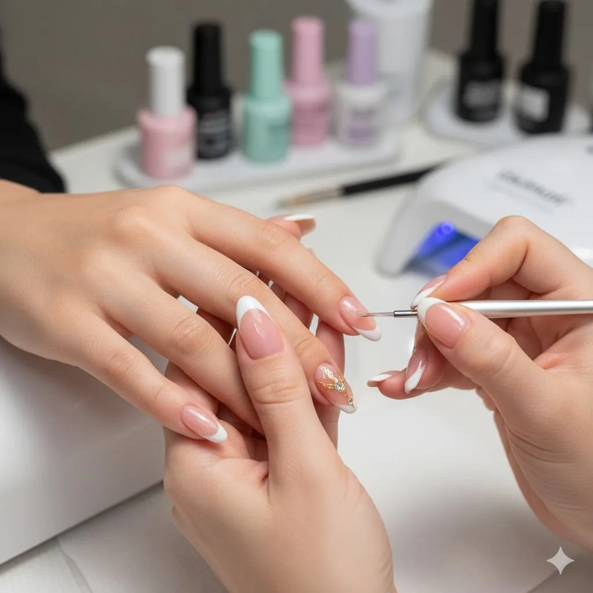
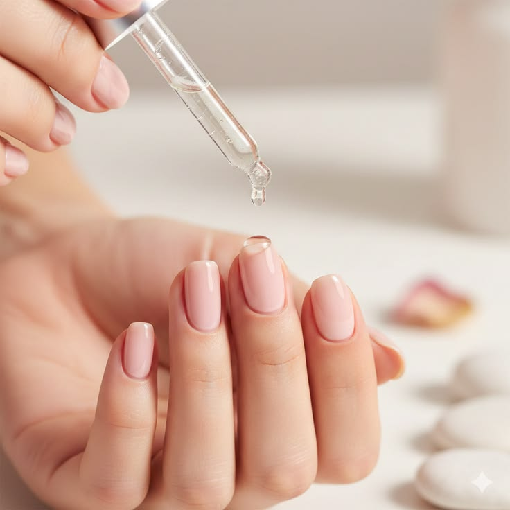
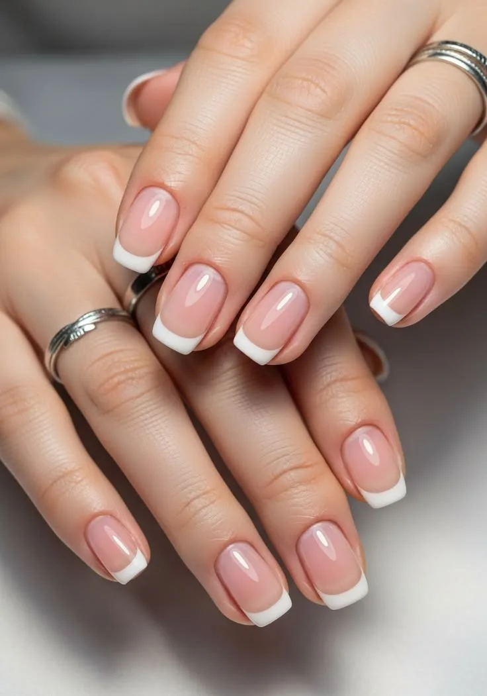
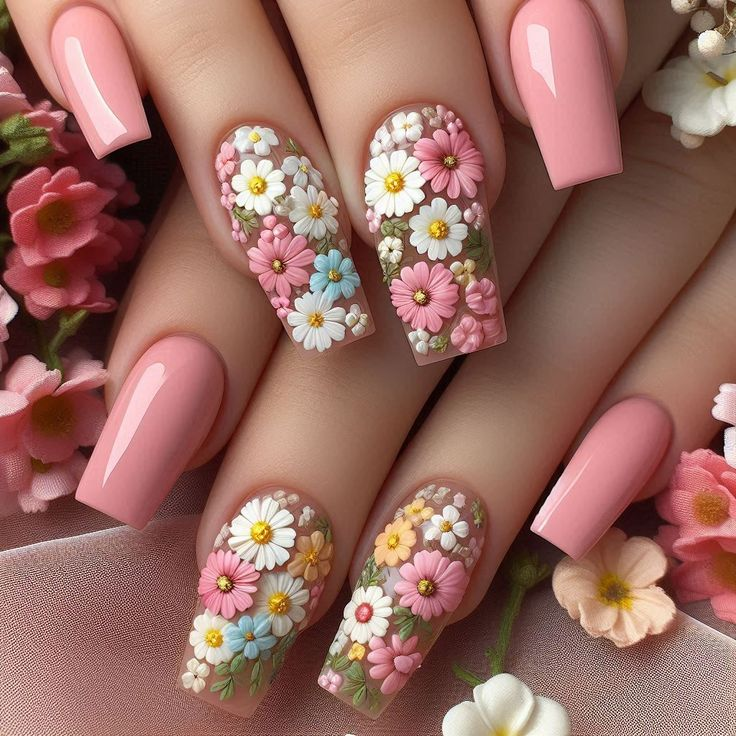
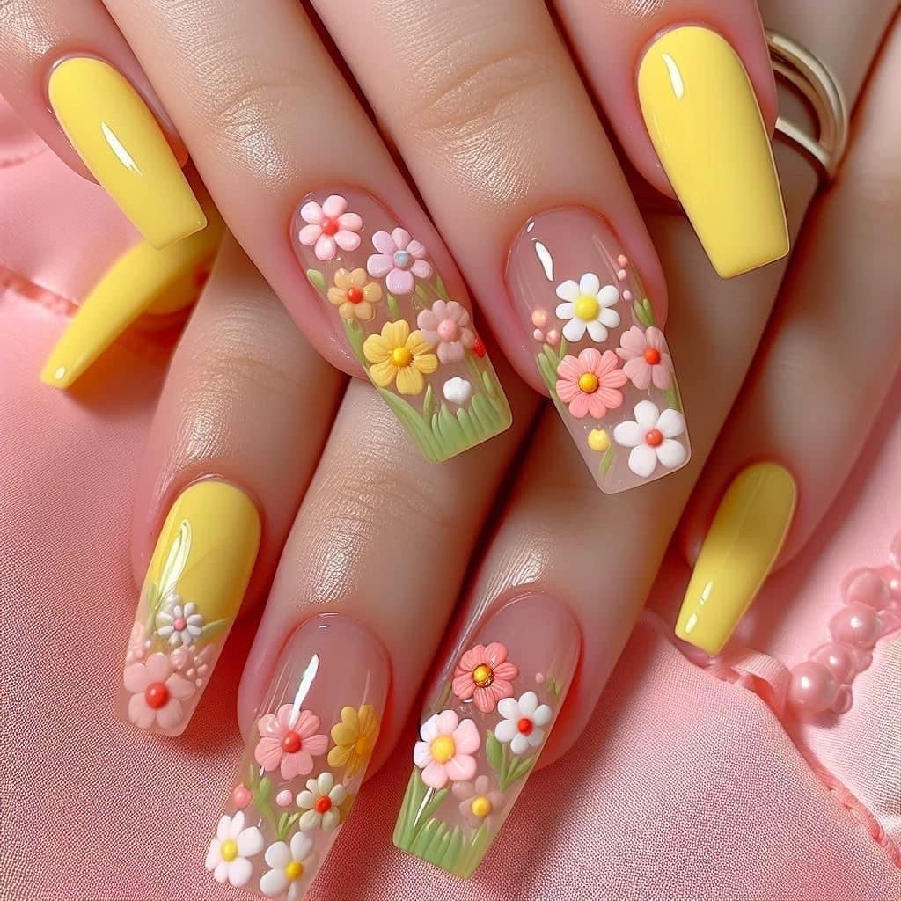
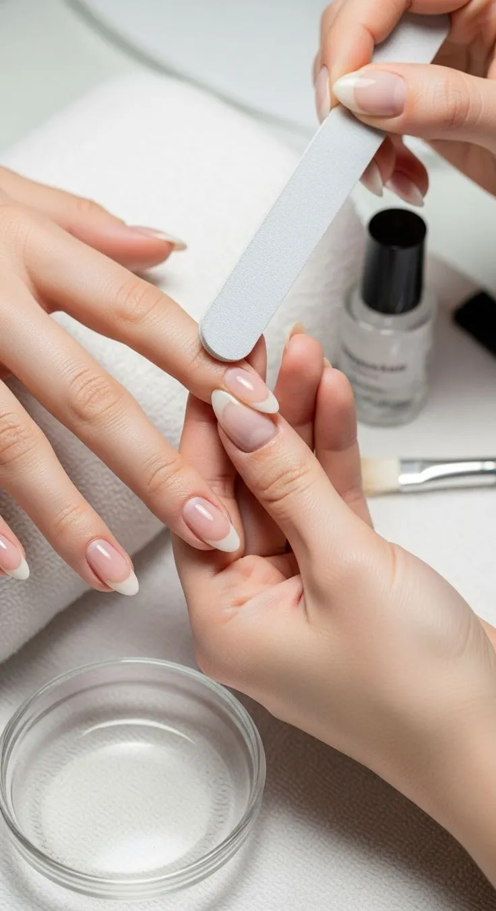
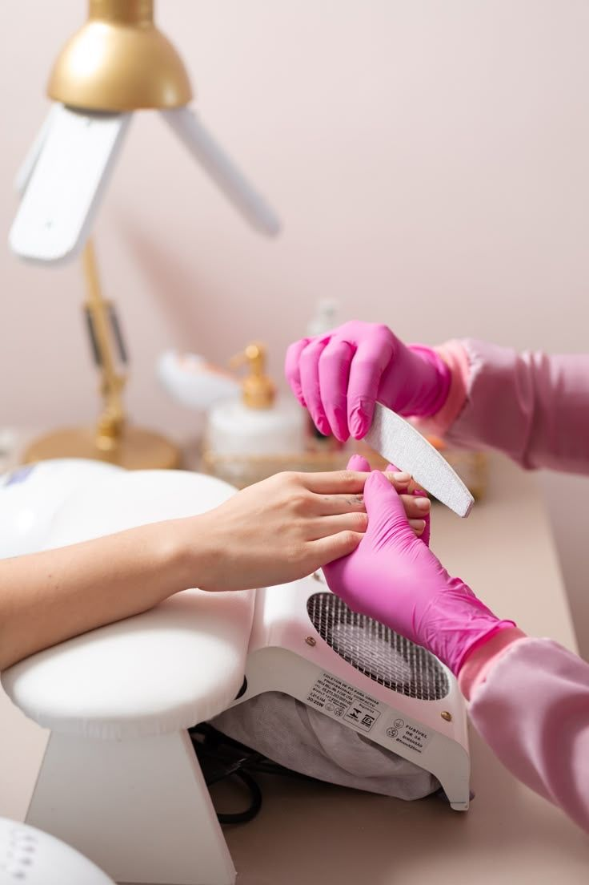
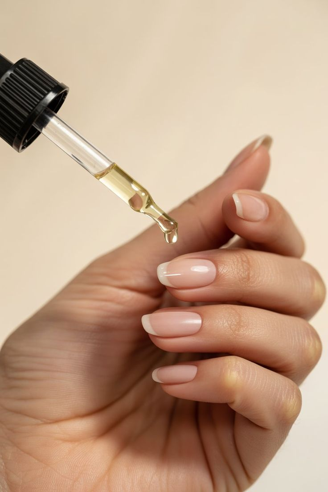
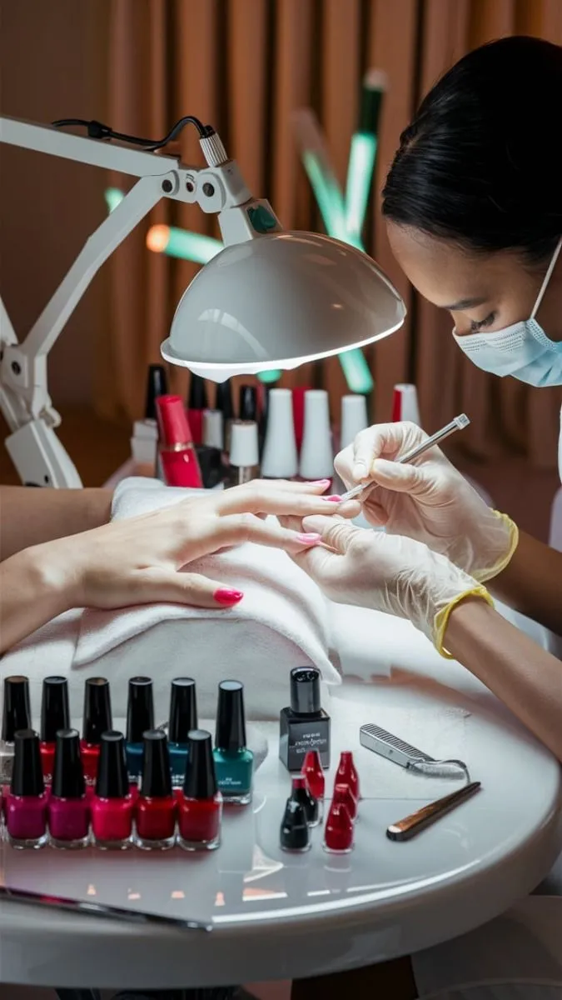

Healthy Nails, Beautiful Results
Discover simple yet effective nail care tips to keep your nails healthy, strong, and beautifully maintained every day.
Daily Nail Care Tips
Small daily habits make a big difference. Follow these simple tips to keep your nails healthy, strong, and beautiful every day.

Keep Nails Clean
Gently clean under your nails with a soft brush and mild soap daily to remove dirt and bacteria, preventing infections.

Moisturize Cuticles
Apply cuticle oil or a gentle moisturizer every night to prevent dryness, cracking, and painful hangnails around the nail bed.

Trim Nails Properly
Use sharp nail clippers and trim straight across, then gently round the tips. This prevents breakage and ingrown nails.
Avoid Harsh Chemicals
Always wear rubber gloves when using cleaning products or detergents. Harsh chemicals weaken nails and strip moisture.
Nail Care Do's & Don'ts
Knowing what to do — and what to avoid — is the foundation of healthy, beautiful nails.

- Keep nails clean and dry after every wash to prevent bacteria.
- Apply hand cream or cuticle oil daily to lock in moisture.
- Trim and file nails regularly in one smooth direction.
- Wear gloves when doing housework or gardening.
- Eat a balanced diet rich in biotin, zinc, and vitamins.
- Use a base coat before applying nail polish to protect nails.

- Don't bite your nails — it spreads germs and damages the nail bed.
- Avoid cutting cuticles as they protect nails from infection.
- Don't use your nails as tools to open cans or scratch surfaces.
- Avoid keeping nail polish on for more than two weeks at a time.
- Don't peel off nail polish — always use a remover properly.
- Avoid acetone-based removers too frequently as they dry nails.
Healthy Nail Routine
Follow this simple four-step routine a few times a week for nails that are consistently clean, strong, and gorgeous.

Clean
Soak your hands in warm soapy water for 2–3 minutes to soften skin and loosen dirt. Use a soft nail brush to gently scrub under and around each nail. Rinse thoroughly and pat dry with a soft towel.

File & Shape
Use a fine-grit nail file and work in one direction — never saw back and forth. Shape nails into your preferred style: oval, square, or round. Filing prevents sharp edges and snags.

Moisturize
Massage a few drops of cuticle oil into each nail bed and cuticle area. Follow with a rich hand cream. This step keeps nails flexible and prevents brittleness and cracking.

Protect
Apply a clear strengthening base coat or nail hardener to seal moisture in and protect against chips and breaks. Let it dry fully before any further polish or daily activities.
Frequently Asked Questions
Got questions about nail care? We have answers to the most common concerns to help you on your nail health journey.